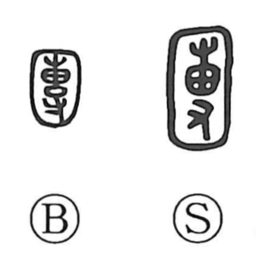

団

Kun: | On: dan, ton
group ・ mass ・ lump ・ team
Explanation
団, formerly 團, surrounds 專 with an enclosing outline. 專 is the sound element. It shows material placed in a sack, 叀, and struck by a hand, 寸, until the contents are compacted into a rounded mass. The outer enclosure emphasizes the resulting rounded whole.
團 names that result: a ball, lump, or compact body. The related 摶 emphasizes the action of beating and rounding it.
Separate things gathered into one mass also provide the idea of a group. 団 can therefore name people brought together as a company, team, or association. 団結 retains the sense of members held firmly as one, while 団欒 evokes their gathering closely together.